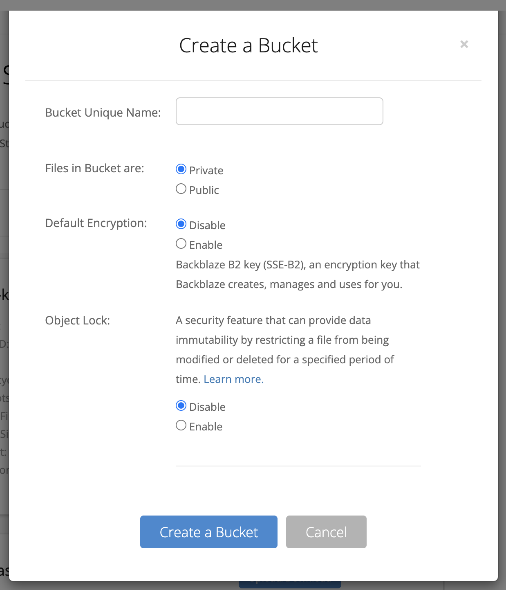
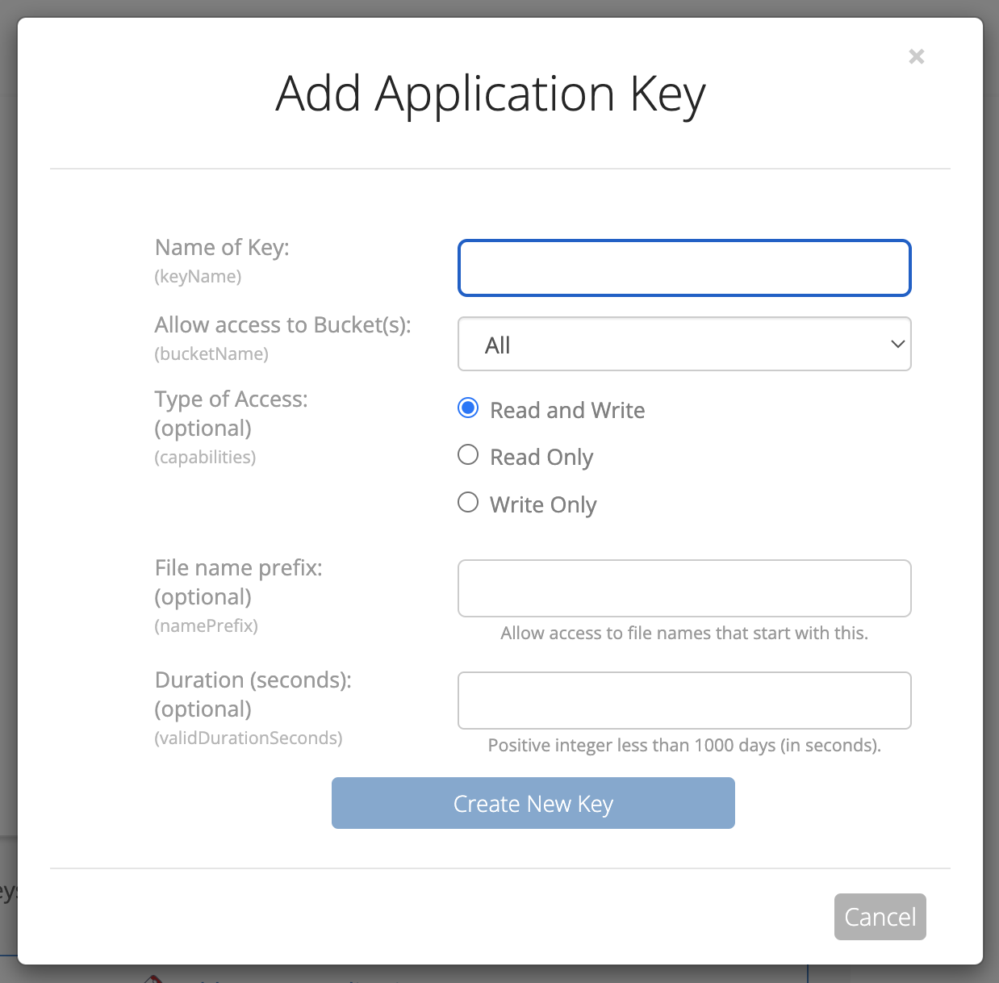
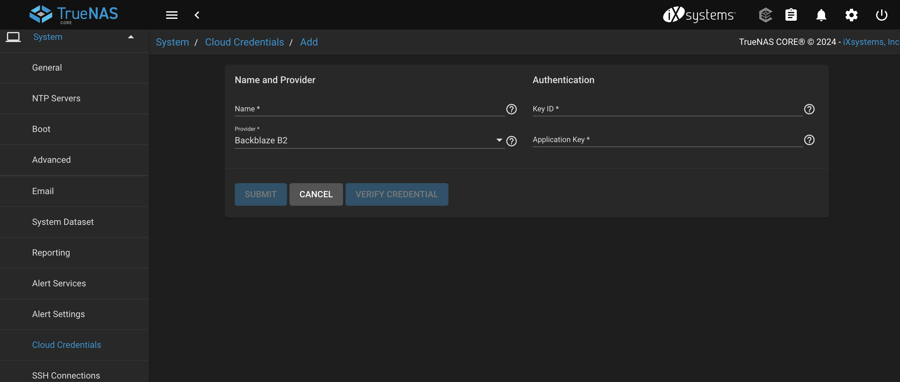
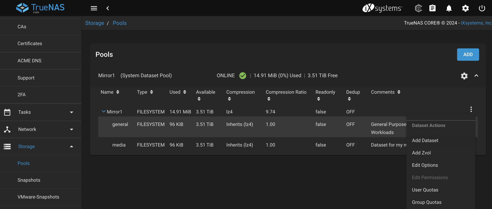
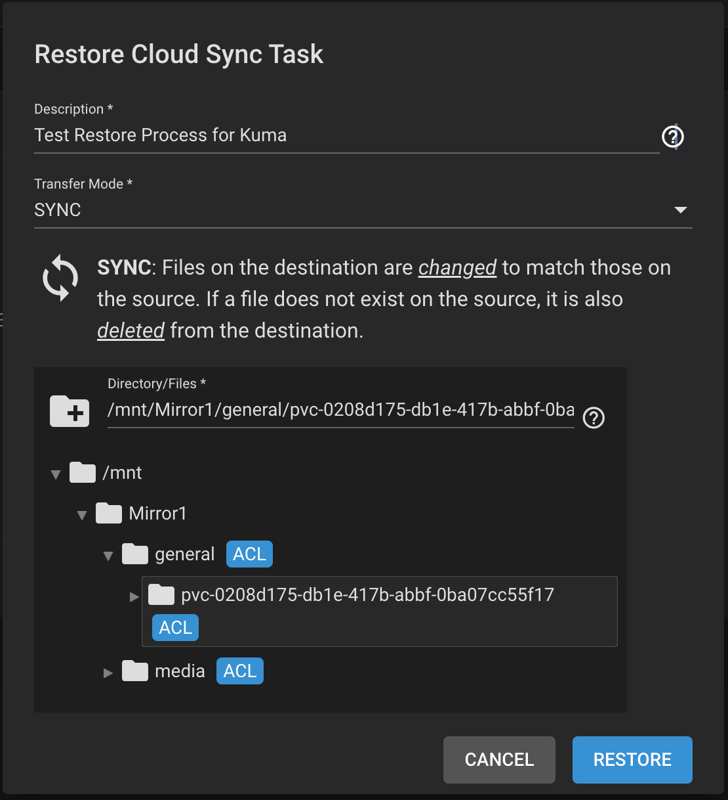
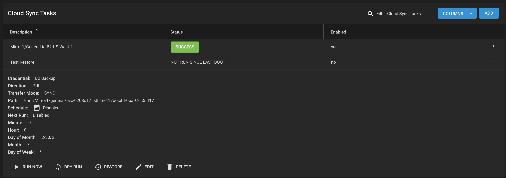
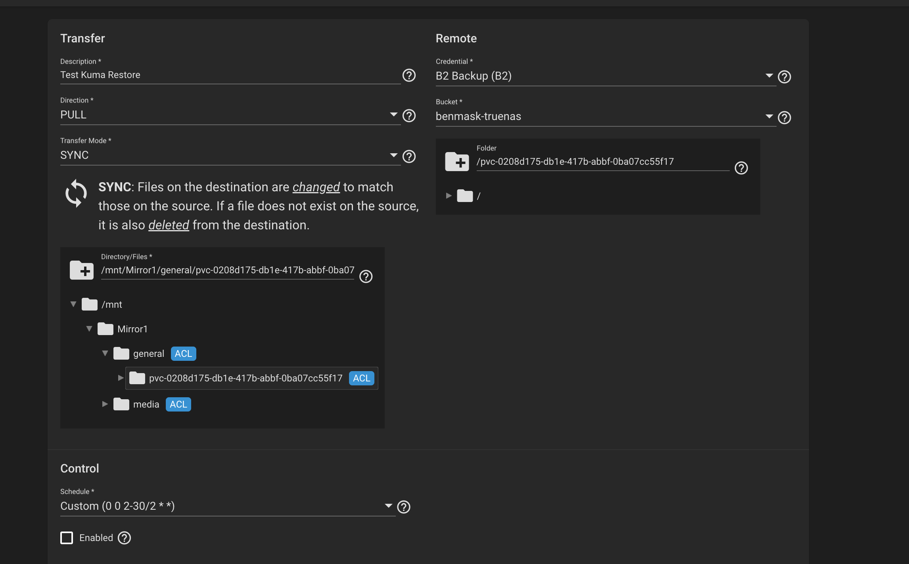

Big Idea
The goal of this post will be to capture the steps required for the backup and restore process of my TrueNAS server. Currenty, my TrueNAS server consists of two 4TB drives in a vdev with a RAID1 (Mirror) config. My goal is to back this up to Backblaze’s S3-compatible B2 storage and test recovery before migrating data out of my old 1TB SSD.
Once I have these backups in places the 3-2-1 rule will be satisfied:
- 3 copies of my data
- 2 different types of storage media
- 1 off-site backup
Creating the B2 Bucket and API Key
Backblaze offers B2 as an S3-compatible storage solution that I will use as offsite backup location. If you’re following along, you’ll first need to create a new private storage bucket in B2 with a unique name. Encrpytion and immutability are up to your discretion.

After you have created your bucket head over to “Application Keys”. You will need to create a new API Key with access to your bucket. This API Key will later added to TrueNAS to enable access. You should allow this API Key to access your bucket with read and write permissions, and no prefixes.

Take note of the KeyID and application key. You will need those in the next step!
Create a Cloud Credential in TrueNAS
Once, you have created you API Key, you will need to create a “Cloud Credential” in TrueNAS. In TrueNAS, go to System > Cloud Credentials and choose to add a new cloud credential for the B2 provider.

Create a Dataset
If you haven’t already, you will want to create a dataset on your zpool. This can be done from Storage > Pools > Add Dataset.

This dataset is what you will be able to share over the network via NFS/SMB/iscsi and is also the level at which we’ll configure the backups. When setting up the datasets, it is good to think about what data you really need backed up and the type of data in the dataset (i.e. do you need block storage? Use iscsi). I have chosen to create a media dataset for my media library, which although upsetting to lose, is not as irreplaceable as photos and will not be backed up due to its size. I will, however, also create a general dataset that will store most data and be backed up.
Some reasonable configurations for the dataset:
- Disable de-deup (friends don’t let their friends use de-dup)
- Use lz4 compression
Creating a Cloud Sync Task
The final step is configuring your Cloud Sync Task in TrueNAS. This is under Tasks > Cloud Sync Tasks. When configuring the cloud sync task you will want to change the direction to PUSH and select your previously created Cloud Credential for the remote. As the description I like to note what I am backing up and to where (i.e. “mirror1/general to b2 us-west-2”).
There are a few options for transfer mode:
- SYNC: Sync keeps files identical between source and destination. If a file is deleted at the source, then it will be deleted in the destination.
- COPY: Copies each source file to the destination. If a sycned file exists at the source with a matching name then file is overwritten during the sync.
- MOVE: Files are transferred from the source to the destination. Files from the source are deleted after transfer.
Restoring
If you have made it this far, you are likely also interested in testing your ability to restore from backups in case you lose data. This final section will walk through the step for doing a full and partial restore via the TrueNas UI.
First, you will need to go to the cloud sync task which you have configured to run backups. If you expand the backup job you will see an option “Restore”. When you click the Restore button a modal will pop up with several config options.

Give your restore job a clear name. Choose the SYNC transfer mode to have the authoritative back up copy overwrite the data on the restore target (i.e. your TrueNAS instance). Additionally, you can choose the location on the TrueNAS instance to which you wish to have the data synced. After configuration, you will see a new Cloud Sync Task has been created but not yet run.

Now, by default if you run this task it will sync the entire backup contents to the location on your TrueNAS instance that you specified. If, like me, your backups contain data spanning multiple applications this might not be what you want. More likely, you wish to restore a subset of that backup data. To do this you need to edit the restore task.

The above shows an example of doing a partial restore in which the contents of the remote /pvc-0208d175-db1e-417b-abbf-0ba07cc55f17 are restored into the /general/pvc-0208d175-db1e-417b-abbf-0ba07cc55f17 folder on the TrueNAS instance/
💡 Note: The restore process will restore the contents of a folder from a remote to a folder on the TrueNAS instance. This means that if you have a back-up at
/and/contains more than one dir such as/kumaand/movies, chossing to restore from/will recursively sync/kumaand/moviesto the TrueNas instance. However, if you wish to just restore/kumaand choose to restore that folder from the remote to/on TrueNas instance then the contents of the remote/kumadir will be put directly to/on the TrueNAS instance (i.e. the restore process will not create a/kumaon the TrueNAS filesystem as part of the restore).To achieve the desired goal, ensure that
/kumaexists on the TrueNAS filesystem and restore the contents of the remote/kumato the TrueNAS/kuma.
After this is all configured you can run the restore task, validate the data, and delete the restore task. I choose to delete the restore task to avoid any accidental invocations.
A Final Note on Backups vs Snapshots
It is important to realize that the backup task will sync all of the data from TrueNAS to the cloud on your scheduled interval. This means that you have always have a copy of your data at the last successful backup run. A consequence of this is, that if data on TrueNAS gets corrupted and then a SYNC occcurs, the corrupted data will be backed up and you won’t be able to restore your machine.
To mitigate this I am hoping in the future to explore incremental backups using ZFS snapshots to provide point in time restore functionality.